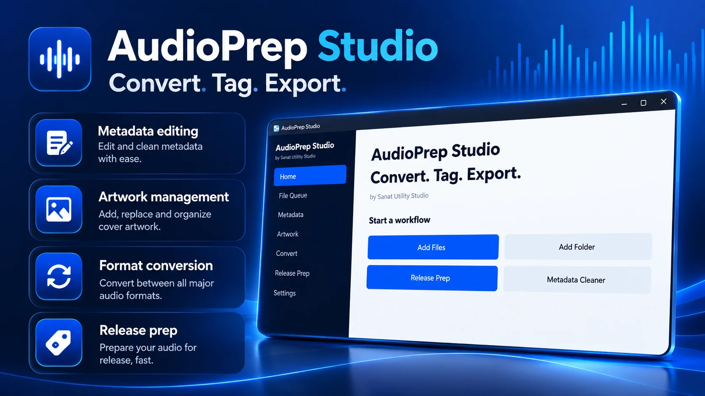
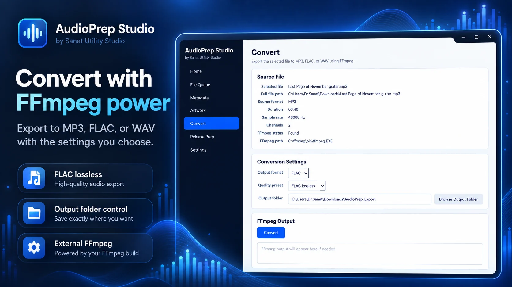
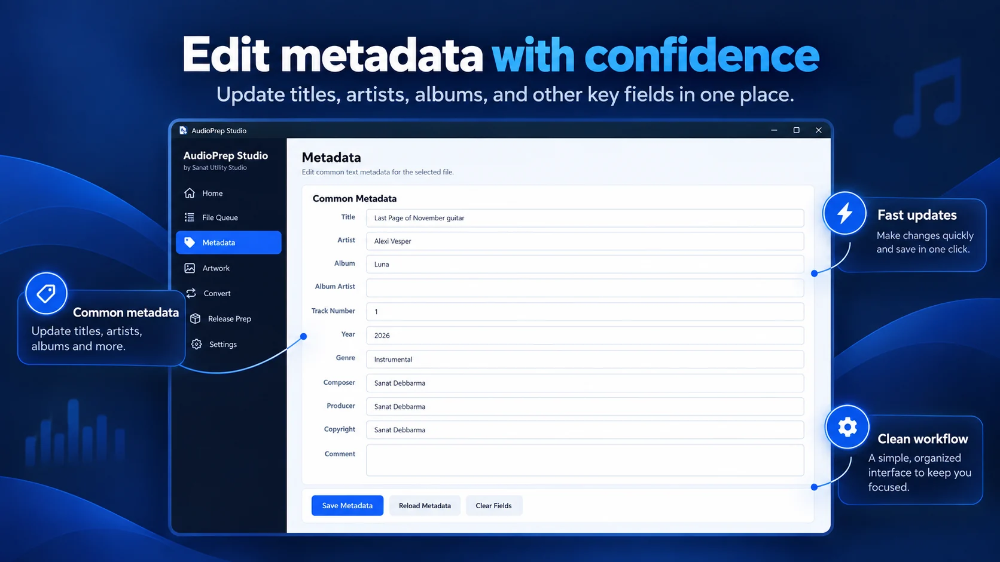
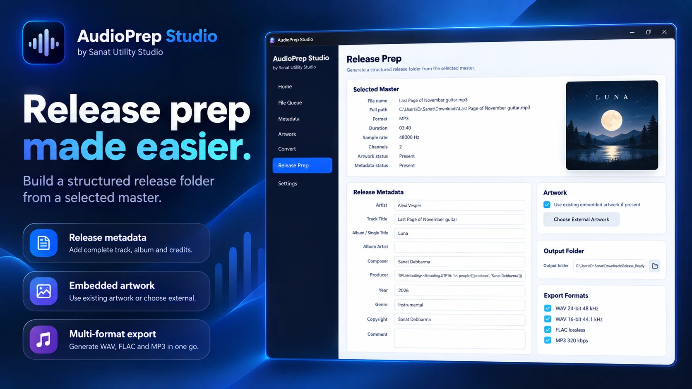

Inspect and edit common track, artist, album, year, genre, composer and copyright fields.
← All products

Windows · Private Beta
AudioPrep Studio
Convert. Tag. Export. A focused Windows workflow for preparing audio files and release-ready packages.

What it does
A complete release-prep workflow.
Manage metadata, artwork, format conversion and release packaging from one streamlined desktop workflow.
Preview, add, replace or remove embedded cover artwork with MP3 compatibility checks.
Convert selected files to MP3, FLAC and WAV presets through an external FFmpeg installation.
Generate a structured release folder with WAV, FLAC, MP3, artwork and a metadata summary.
Prepare multiple delivery formats from a single selected master without rebuilding the workflow each time.
Keep preparation and export work on your own Windows system while using the external tools you already trust.
Inside the product
See the workflow in action.
Explore conversion, metadata and release-preparation workflows inside AudioPrep Studio.



Availability
Private beta access by request.
AudioPrep Studio is available as a private beta by request. Contact Sanat Utility Studio for access, licensing and current pricing.